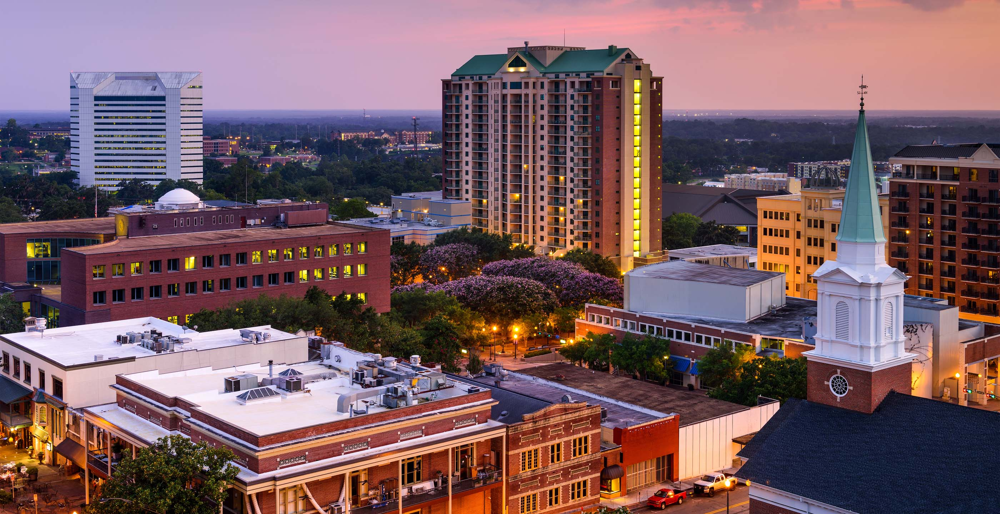

Welcome to Tallahassee
The State Capital
“The capital city of Florida, rich in history and home to major universities.”.

City Demographics
| Statistics |
Value |
| Population |
198, 259 |
| Cost of Living Index |
91.9 |
| Weather |
Hot summer and mild winters |
| Year Incorporated |
1824 |
| Region |
Florida Panhandle (North Florida) |
| Classification |
Urban |
| Average Income Level |
| Avg Household Income |
$73, 485 |
| Florida Avg Household Income |
$61, 777 |
“Tallahassee’s average income is lower than the state average, reflecting its status as a university town with a significant student population.”
Top Attractions in Tallahassee
- Florida State Capitol – Historic government building with panoramic views from the top.
- Mission San Luis – A living history museum showcasing early Spanish settlements.
- Cascades Park – A vibrant urban park with trails, fountains, and an amphitheater.
- Alfred B. Maclay Gardens State Park – Beautiful gardens perfect for walking and picnics.
- Museum of Florida History – Learn about Florida’s rich and diverse past.